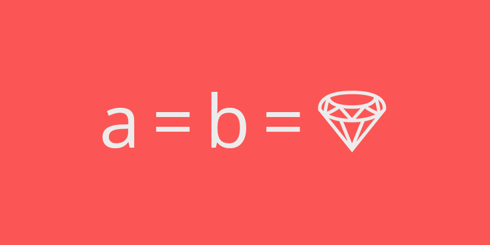

Multiple assignment in Ruby

On Ruby we can assign multiple values to our variables. These assignments are very useful to reset variables and return multiple values from methods.
Multiple assignment
There are two ways to assign multiples values to variables:
# First
a, b = 1, 2
puts "#{a}, #{b}"
# 1, 2
c, d = [3, 4]
puts "#{c}, #{d}"
# 3, 4
Two ways have same result, but second has a small advantage. If we want to assign same value to all variables, we can compress the code using the array:
a, b, c, d = 'hi', 'hi', 'hi', 'hi'
# Now with arrays
a, b, c, d = ['hi'] * 4
Mutable objects
There are a third way to assign same value to multiple variables:
a = b = 1
This assignment has a big problem: b is initialized with 1 but a is equal to b object. In this case, we don't have problem because Fixnum is an inmutable class, like nil, so to change a doesn't affect to b.
What happens when we assign a mutable value?
a = b = 'hi'
puts "#{a}, #{b}"
# hi, hi
a << ' bye'
puts "#{a}, #{b}"
# hi bye, hi bye
# Object reference
puts "#{a.object_id} - #{b.object_id}"
# 2177648520 - 2177648520
We don't want this behaviour in our applications.
Return multiple values in method
The secret to return multiples values in a method is to use an array as return object. Call the method and Assign the output of the method to the correct number of variables.
def numbers
[1, 2]
end
a, b = numbers
puts "#{a}, #{b}"
# 1, 2
Be careful with the number of variables when assign the output of a method, they can get an unexpected value:
a = numbers
puts a
# [1, 2]
a, b, c = numbers
puts "#{b}, #{c}"
# 2, nil